전기기사 (2013-08-18 기출문제)
1과목: 전기자기학
1. 그림과 같은 콘덴서 C[F]에 교번전압 Vssinωt[V]를 가했을 때 콘덴서 내의 변위전류[A]는?
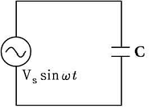
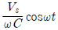
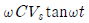
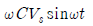
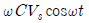
(정답률: 74%)

2. 그림에서 I[A]의 전류가 반지름 a[m]의 무한히 긴 원주도체를 축에 대하여 대칭으로 흐를 때 원주 외부의 자계 H를 구한 값은?
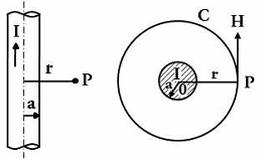
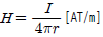
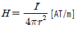
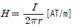
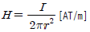
(정답률: 70%)
3. 환상철심에 권수 100회인 A 코일과 권수 400회인 B 코일이 있을때 A의 자기인덕턴스가 4[H]라면 두 코일의 상호인덕턴스는 몇 [H]인가?
- 16
- 12
- 8
- 4
(정답률: 78%)
4. 한 변의 길이가 500[㎜]인 정사격형 평행 평판 2장이 10[㎜] 간격으로 놓여 있고 그림과 같이 유전율이 다른 2개의 유전체로 채워진 경우 합성용량은 약 몇 [pF]인가?
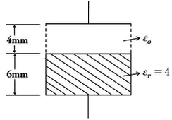
- 402
- 922
- 2028
- 4228
(정답률: 51%)
5. 철도궤도간 거리가 1.5[m]이며 궤도는 서로 절연되어 있다. 열차가 매시 60[km]의 속도로 달리면서 차축이 지구자계의 수직분력 B=0.15×10-4[Wb/m2]을 절단할 때 두 궤도사이에 발생하는 기전력은 몇 [V]인가?
- 1.75×10-4
- 2.75×10-4
- 3.75×10-4
- 4.75×10-4
(정답률: 61%)
6. 그림과 같이 점 O 를 중심으로 반지름 a[m]의 도체구 1과 내반지름 b[m], 외반지름 c[m]의 도체구 2가 있다. 이 도체계에서 전위계수 P11[1/F]에 해당되는 것은?
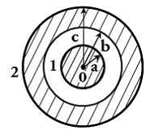
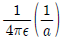
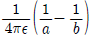
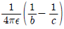
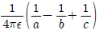
(정답률: 78%)
7. 500[AT/m]의 자계 중에 어떤 자극을 놓았을 때 5×103[N]의 힘이 작용했을 때의 자극의 세기는 몇 [Wb]인가?
- 10
- 20
- 30
- 40
(정답률: 81%)
8. 패러데이 법칙에서 유도기전력 e[V]를 옳게 표현한 것은?
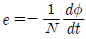
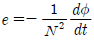
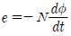
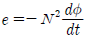
(정답률: 85%)
9. 무한 평면도체에서 r[m] 떨어진 곳에 p[C/m]의 전하분포를 갖는 직선도체를 놓았을 때 직선도체가 받는 힘의 크기 [N/m]는? 단, 공간의 유전율은 ε0이다.
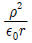
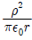
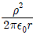
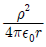
(정답률: 47%)
10. 반지름 a[m]인 반원형 전류 I[A]에 의한 중심에서의 자계의 세기는 몇 [AT/m] 인가?
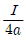
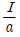
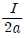
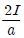
(정답률: 55%)
11. 전계 E[V/m], 자계 H[AT/m]의 전자계가 평면파를 이루고 자유공간으로 전파될 때 진행방향에 수직되는 단위면적을 단위시간에 통과하는 에너지는 몇 [W/m2]인가?
- EH2
- EH
- 1/2 EH2
- 1/2 EH
(정답률: 78%)
12. 판자석의 세기가 0.01[Wb/m], 반지름이 5[cm]인 원형 자석판이 있다. 자석의 중심에서 축상 10[cm]인 점에서의 자위의 세기는 몇 [AT] 인가?(오류 신고가 접수된 문제입니다. 반드시 정답과 해설을 확인하시기 바랍니다.)
- 100
- 175
- 370
- 420
(정답률: 48%)
13. 같은 길이의 도선으로 M 회와 N 회 감은 원형 동심 코일에 각각 같은 전류를 흘릴 때 M 회 감은 코일의 중심 자계는 N 회 감은 코일의 몇 배인가?
- M/N
- M2/N
- M/N2
- M2/N2
(정답률: 53%)
14. 2개의 폐회로 C1, C2에서 상호유도계수를 구하는 노이만(Neumann)의 식으로 옳은 것은? (단, μ: 자율, ε:유전율, r12:두 미소 부분간의 거리, dl1, dl2:각 회로상에 취한 미소부분이다)
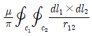
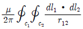
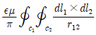
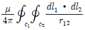
(정답률: 57%)
15. 선전하밀도가 λ[C/m]로 균일한 무한 직선도선의 전하로부터 거리가 r [m]인 점의 전계의 세기(E)는 몇 [V/m] 인가?
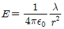
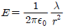
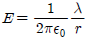
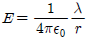
(정답률: 64%)
16. 전류가 흐르는 도선을 자계 안에 놓으면, 이 도선에 힘이 작용한다. 평등 자계의 진공 중에 놓여 있는 직선 전류도선이 받는 힘에 대하여 옳은 것은?
- 전류의 세기에 반비례한다.
- 도선의 길이에 비례한다.
- 자계의 세기에 반비례한다.
- 전류와 자계의 방향이 이루는 각 tanθ에 비례한다.
(정답률: 67%)
17. 반지름 a[m]인 도체구에 전하 Q[C]를 주었다. 도체구를 둘러싸고 있는 유전체의 유전율이 εs인 경우 경계면에 나타나는 분극 전하는 몇 [C/m2] 인가?
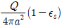
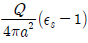
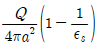
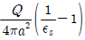
(정답률: 69%)
18. 자계의 벡터 포텐셜을 A[Wb/m]라 할 때 도체 주위에서 자계 B[Wb/m2]가 시간적으로 변화하면 도체에 생기는 전계의 세기 E[V/m]는?
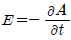
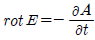
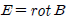
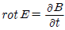
(정답률: 73%)
19. 정전용량(Ci)과 내압(Vimax)이 다른 콘덴서를 여러 개 직렬로 연결하고 그 직렬회로 양단에 직류전압을 인가할 때 가장 먼저 절연이 파괴되는 콘덴서는?
- 정전용량이 가장 작은 콘덴서
- 최대 충전 전하량이 가장 작은 콘덴서
- 내압이 가장 작은 콘덴서
- 배분전압이 가장 큰 콘덴서
(정답률: 61%)
20. 자기회로에 대한 설명으로 틀린 것은?
- 전기회로의 정전용량에 해당되는 것은 없다.
- 자기저항에 전기저항의 줄 손실에 해당되는 손실이 있다.
- 기자력과 자속은 변화가 비직선성을 갖고 있다.
- 누설자속은 전기회로의 누설전류에 비하여 대체로 많다.
(정답률: 54%)
2과목: 전력공학
21. 다음 중 송전선로에 사용되는 애자의 특성이 나빠지는 원인으로 볼 수 없는 것은?
- 애자 각 부분의 열팽창의 상이
- 전선 상호간의 유도장해
- 누설전류에 의한 편열
- 시멘트의 화학팽창 및 동결팽창
(정답률: 59%)
22. 화력발전소에서 절탄기의 용도는?
- 보일러에 공급되는 급수를 예열한다.
- 포화증기를 과열한다.
- 연소용 공기를 예열한다.
- 석탄을 건조한다.
(정답률: 74%)
23. 모선 보호에 사용되는 계전방식이 아닌 것은?
- 선택접지 계전기
- 방향거리 계전기
- 위상 비교방식
- 전류차동 보호방식
(정답률: 56%)
24. 피뢰기가 구비하여야 할 조건으로 거리가 먼 것은?
- 충격방전 개시전압이 낮을 것
- 상용주파 방전 개시전압이 낮을 것
- 제한전압이 낮을 것
- 속류의 차단능력이 클 것
(정답률: 70%)
25. 전력선과 통신선간의 상호 정전용량 및 상호 인덕턴스에 의해 발생되는 유도장해로 옳은 것은?
- 정전유도장해 및 전자유도장해
- 전력유도장해 및 정전유도장해
- 정전유도장해 및 고조파유도장해
- 전자유도장해 및 고조파유도장해
(정답률: 77%)
26. 지중전선로가 가공 전선로에 비해 장점에 해당되는 것이 아닌 것은?
- 경과지 확보가 가공 전선로에 비해 쉽다.
- 다회선 설치가 가공 전선로에 비해 쉽다.
- 외부 기상 여건 등의 영향을 받지 않는다.
- 송전용량이 가공 전선로에 비해 크다.
(정답률: 57%)
27. 송전전력, 송전거리, 전선의 비중 및 전력손실률이 일정하다고 하며 전선의 단면적 A[mm2]와 송전전압 V[kV]와의 관계로 옳은 것은?
- A ∝ V
- A ∝ V2
- A ∝ 1/V2
- 1 ∝ 1/√V
(정답률: 77%)
28. 3상3선식 선로에서 수전단전압이 6600[V], 역률 80[%](지상), 정격전류 50[A]의 3상 평형부하가 연결되어 있다. 선로임피던스 R=3[Ω], X=4[Ω]인 경우 이때의 송전단전압은 약 몇 [V]인가?
- 7,543
- 7,037
- 7,016
- 6,852
(정답률: 56%)
29. 전등만으로 구성된 수용가를 두 군으로 나누어 각 군에 변압기 1개씩을 설치하며 각 군의 수용가의 총 설비용량을 각각 30[kW], 50[kW]라 한다. 각 수용가의 수용률을 0.6, 수용가간 부등률을 1.2, 변압기군의 부등률을 1.3이라고 하면 고압간선에 대한 최대 부하는 약 몇 [kW]인가? (단, 간선의 역률은 100[%]이다.)
- 15
- 22
- 31
- 35
(정답률: 61%)
30. 저압 배전선의 배전 방식 중 배전설비가 단순하고, 공급능력이 최대인 경제적 배분방식이며, 국내에서 220/380[V] 승압방식으로 채택된 방식은?
- 단상 2선식
- 단상 3선식
- 3상 3선식
- 3상 4선식
(정답률: 69%)
31. 조압수조(surge tank)의 설치 목적이 아닌 것은?
- 유량을 조절한다.
- 부하의 변동시 생기는 수격작용을 흡수한다.
- 수격압이 압력 수로에 미치는 것을 방지한다.
- 흡출관의 보호를 취한다.
(정답률: 64%)
32. 단도체 방식과 비교하여 복도체 방식의 송전선로를 설명한 것으로 옳지 않은 것은?
- 전선의 인덕턴스가 감소하고, 정전용량이 증가된다.
- 선로의 송전용량이 증가된다.
- 계통의 안정도를 증진시킨다.
- 전선 표면의 전위경도가 저감되어 코로나 임계전압을 낮출 수 있다.
(정답률: 75%)
33. 전력계통의 전압조정설비에 대한 특징으로 옳지 않은 것은?
- 병렬콘덴서는 진상능력만을 가지고 병렬리액터는 진상능력이 없다.
- 동기조상기는 조정의 단계가 불연속적이나 직렬 콘덴서 및 병렬리액터는 연속적이다.
- 동기조상기는 무효전력의 공급과 흡수가 모두 가능하여 진상 및 지상용량을 갖는다
- 병렬리액터는 장거리 초고압송전선 또는 지중선계통의 충전용량 보상용으로 주요 발ㆍ변전소 에 설치된다.
(정답률: 71%)
34. 통신선과 병행인 60[Hz]의 3상 1회선 송전선에서 1선 지락으로 110[A]의 영상전류가 흐르고 있을 때 통신선에 유기되는 전자유도전압은 약 몇 [V]인가? (단, 영상전류는 송전선 전체에 걸쳐 같은 크기이고, 통신선과 송전선의 상호 인덕턴스는 0.⑤[mH/km], 양 선로의 평행 길이는 55[km]이다.)
- 252[V]
- 293[V]
- 342[V]
- 365[V]
(정답률: 61%)
35. 송전선에 코로나가 발생하면 전선이 부식된다. 무엇에 의하여 부식되는가?
- 산소
- 오존
- 수소
- 질소
(정답률: 70%)
36. 다음 중 부하 전류의 차단에 사용되지 않는 것은?
- ABB
- OCB
- VCB
- DS
(정답률: 79%)
37. 주변압기 등에서 발생하는 제5고조파를 줄이는 방법으로 옳은 것은?
- 전력용 콘덴서에 직렬리액터를 접속한다.
- 변압기 2차측에 분로리액터를 연결한다.
- 모선에 방전코일을 연결한다.
- 모선에 공심 리액터를 연결한다.
(정답률: 75%)
38. 4단자 정수가 A, B, C, D 인 송전선로의 등가 π회로를 그림과 같이 하면 Z1의 값은?
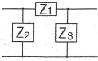
- B
- A/B
- D/B
- 1/B
(정답률: 67%)
39. 정격전압이 66[kV]인 3상3선식 송전선로에서 1선의 리액턴스가 17[Ω]일 때, 이를 100[MVA] 기준으로 환산한 %리액턴스는 약 얼마인가?
- 35
- 39
- 45
- 49
(정답률: 70%)
40. 공통 중성선 다중 접지방식의 배전선로에서 Recloser(R), Sectionalizer(S), Line fuse(F)의 보호협조가 가장 적합한 배열은? (단, 왼쪽은 후비보호 역할이다.)
- S-F-R
- S-R-F
- F-S-R
- R-S-F
(정답률: 77%)
3과목: 전기기기
41. 출력 7.5[kW]의 3상 유도전동기가 전부하 운전에서 2차 저항손이 200[W]일 때, 슬립은 약 몇[%]인가?
- 8.8
- 3.8
- 2.6
- 2.2
(정답률: 66%)
42. 비례추이를 하는 전동기는?
- 단상 유도전동기
- 권선형 유도전동기
- 동기 전동기
- 정류자 전동기
(정답률: 73%)
43. 유도전동기의 안정 운전의 조건은? (단, Tm : 전동기 토크, TL : 부하토크, n : 회전수)
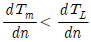
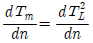
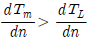
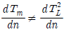
(정답률: 67%)
44. 부하전류가 100[A]일 때 회전속도 1000[rpm]으로 10[kgㆍm]의 토크를 발생하는 직류 직권전동기가 80[A]의 부하전류로 감소되었을 때의 토크는 몇 [kgㆍm]인가?
- 2.5
- 3.6
- 4.9
- 6.4
(정답률: 63%)
45. 3상 유도전동기의 기계적 출력 P[kW], 회전수 N[rpm]인 전동기의 토크[kgㆍm]는?
- 0.46×P/N
- 0.855×P/N
- 975×P/N
- 1⑤0×P/N
(정답률: 75%)
46. 다음은 스텝모터(step motor)의 장점을 나열한 것이다. 틀린것은?
- 피드백 루프가 필요 없이 오픈 루프로 손쉽게 속도 및 위치제어를 할 수 있다.
- 디지털 신호를 직접 제어 할 수 있으므로 컴퓨터 등 다른 디지털 기기와 인터페이스가 쉽다.
- 가속, 감속이 용이하며 정ㆍ역전 및 변속이 쉽다.
- 위치제어를 할 때 각도 오차가 크고 누적된다.
(정답률: 73%)
47. 3상 직권 정류자전동기에 중간 변압기를 사용하는 이유로 적당하지 않은 것은?
- 중간 변압기를 이용하여 속도 상승을 억제할 수 있다.
- 중간 변압기를 사용하여 누설 리액턴스를 감소할 수 이다.
- 회전자 전압을 정류작용에 맞는 값으로 선정할 수 있다.
- 중간 변압기의 권수비를 바꾸어 전동기 특성을 조정할 수 있다.
(정답률: 55%)
48. 단상반파 정류회로의 직류전압이 220[V] 일 때 정류기의 역방향 첨두전압은 약 몇 [V]인가?
- 691
- 628
- 536
- 314
(정답률: 58%)
49. 3상 동기 발전기의 매극 매상의 슬롯수가 3일 때 분포권 계수는?
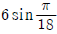
(정답률: 76%)
50. 부하 급변시 부하각과 부하속도가 진동하는 난조 현상을 일으키는 원인이 아닌 것은?
- 원동기의 조속기 감도가 너무 예민한 경우
- 자속의 분포가 기울어져 자속의 크기가 감소한 경우
- 전기자 회로의 저항이 너무 큰 경우
- 원동기의 토크에 고조파가 포함된 경우
(정답률: 53%)
51. 부하전류가 크지 않을 때 직류 직권전동기 발생 토크는? (단, 자기회로가 불포화인 경우이다.)
- 전류의 제곱에 반비례한다.
- 전류에 반비례한다.
- 전류에 비례한다.
- 전류의 제곱에 비례한다.
(정답률: 58%)
52. 정격속도로 회전하고 있는 무부하의 분권발전기가 있다. 계자저항 40[Ω], 계자전류 3[A], 전기자 저항이 2[Ω] 일 때 유기기전력[V]은?
- 126
- 132
- 156
- 185
(정답률: 71%)
53. 변압기의 1차측을 Y결선, 2차측을 △결선으로 한 경우 1차와 2차간의 전압의 위상변위는?
- 0°
- 30°
- 45°
- 60°
(정답률: 68%)
54. 전력 변환 기기가 아닌 것은?
- 변압기
- 정류기
- 유도전동기
- 인버터
(정답률: 68%)
55. 단상 단권변압기 3대를 Y결선으로 해서 3상 전압 3000[V]를 300[V] 승압하여 3300[V]로 하고, 150[kVA]를 송전하려고 한다. 이 경우에 단상 단권변압기의 저전압측 전압, 승압전압 및 Y결선의 자가용량은 얼마인가?
- 3000[V], 300[V], 13.62[kVA]
- 3000[V], 300[V], 4.54[kVA]
- 1732[V], 173.2[V], 13.62[kVA]
- 1732[V], 173.2[V], 4.54[kVA]
(정답률: 54%)
56. 4극, 3상 유도전동기가 있다. 총 슬롯수는 48이고 매극 매상 슬롯에 분포하고 코일 간격은 극간격의 75[%]의 단절권으로 하면 권선계수는 얼마인가?
- 약 0.986
- 약 0.960
- 약 0.924
- 약 0.887
(정답률: 45%)
57. 동기발전기의 무부하 포화곡선은 그림 중 어느 것인가? (단, V는 단자전압, If는 여자전류이다.)
- ①
- ②
- ③
- ④
(정답률: 58%)
58. 직류 분권발전기의 전기자 권선을 단중 중권으로 감으면?
- 브러시 수는 극수와 같아야 한다.
- 균압선이 필요 없다.
- 높은전압, 작은전류에 적당하다.
- 병렬 회로수는 항상 2이다.
(정답률: 65%)
59. 직류 분권전동기의 공급전압의 극성을 반대로 하면 회전방향은?
- 변하지 않는다.
- 반대로 된다.
- 회전하지 않는다.
- 발전기로 된다.
(정답률: 50%)
60. 어느 변압기의 무유도 전부하의 효율은 97[%], 전압변동률은 2[%]라 한다. 최대효율[%]은?
- 약 93
- 약 95
- 약 97
- 약 99
(정답률: 48%)
4과목: 회로이론 및 제어공학
61. 특성 방정식 s3+9s2+20s+k=0에서 허수축과 교차하는 점 s는?
(정답률: 57%)
62. 제어계의 과도응답에서 감쇠비란?
- 제2 오버슈트를 최대 오버슈트로 나눈 값이다.
- 최대 오버슈트를 제2 오버슈트로 나눈 값이다.
- 제2 오버슈트와 최대 오버슈트를 곱한 값이다.
- 제2 오버슈트와 최대 오버슈트를 더한 값이다.
(정답률: 57%)
63. 의 함수를 z 역변환하면?
- y(t) = -2u(t)-2u(2t)
- y(t) = -2u(t)+2u(2t)
- y(t) = -3δ(t)-3δ(2t)
- y(t) = -3δ(t)+3δ(2t)
(정답률: 59%)
64. Nyquist 선도에서 얻을 수 있는 자료 중 틀린 것은?
- 계통의 안정도 개선법을 알 수 있다.
- 상태 안정도를 알 수 있다.
- 정상 오차를 알 수 있다.
- 절대 안정도를 알 수 있다.
(정답률: 54%)
65. 시간영역에서의 제어계 설계에 주로 사용되는 방법은?
- Bode 선도법
- 근궤적법
- Nyquist 선도법
- Nichols 선도법
(정답률: 50%)
66. 상태 방정식이 다음과 같은 계의 천이행렬 는 어떻게 표시되는가?
(정답률: 61%)
67. 의 논리식을 간략화 하면?
- A+AC
- A+C
(정답률: 64%)
68. 적분시간 4[sec], 비례감도가 4인 비례적분 동작을 하는 제어계에 동작신호 Z(t)=2t를 주었을때 이 시스템의 조작량은?
- t2+8t
- t2+4t
- t2-8t
- t2-4t
(정답률: 49%)
69. 다음 시스템의 전달함수 (C/R)는?
(정답률: 73%)
70. 다음과 같은 궤환 제어계가 안정하기 위한 K 의 범위는?
- K > 0
- K > 1
- 0 < K < 1
- 0 < K < 2
(정답률: 61%)
71. 어떤 회로에 E=100+j50[V]인 전압을 가했더니 I=3+j4[A]인 전류가 흘렀다면 이 회로의 소비전력[W]은?
- 300
- 500
- 700
- 900
(정답률: 57%)
72. 다음 결합 회로의 4단자 정수 A, B, C, D 파라미터 행렬은?
(정답률: 58%)
73. △결선된 대칭 3상 부하가 있다. 역률이 0.8(지상)이고, 전소비전력이 1,800[W]이다. 한 상의 선로저항이 0.5[Ω]이고, 발생하는 전선로 손실이 50[W]이면 부하단자 전압은?
- 440[V]
- 402[V]
- 324[V]
- 225[V]
(정답률: 47%)
74. 3상 △부하에서 각 선전류를 Ia, Ib, Ic라 하면 전류의 영상분은? (단, 회로는 평형 상태임)
- ∞
- 1/3
- 1
- 0
(정답률: 70%)
75. 1[km]당의 인덕턴스 30[mH], 정전용량 0.007[㎌]의 선로가 있을때 무손실 선로라고 가정한 경우의 위상속도 [km/sec]는?
- 약 6.9×103
- 약 6.9×104
- 약 6.9×102
- 약 6.9×105
(정답률: 62%)
76. RL 직렬회로에서 시정수가 0.04[sec], 저항이 15.8[Ω]일 때 코일의 인덕턴스 [mH]는?
- 395[mH]
- 2.53[mH]
- 12.6[mH]
- 632[mH]
(정답률: 66%)
77. 직렬 저항 2[Ω], 병렬 저항 1.5[Ω]인 무한제형 회로(Infinite Ladder)의 입력저항(등가 2단자망의 저항)의 값은 약 얼마인가?
- 6[Ω]
- 5[Ω]
- 3[Ω]
- 4[Ω]
(정답률: 60%)
78. e=200√2sinωt+100√2sin3ωt+50√2sin5ωt[V]인 전압을 RL 직렬회로에 가할 때에 제3고조파 전류의 실효값 [A]은? (단, R=8[Ω], ωL=2[Ω]이다.
- 10[A]
- 14[A]
- 20[A]
- 28[A]
(정답률: 66%)
79. 그림의 정전용량 C[F]를 충전한 후 스위치 S를 닫아 이것을 방전하는 경우의 과도전류는? (단, 회로에는 저항이 없다.)
- 불변의 진동전류
- 감쇠하는 전류
- 감쇠하는 진동전류
- 일정치까지 증가한 후 감쇠하는 전류
(정답률: 50%)
80. 다음과 같은 전류의 초기값 i(0+)은?
- 6
- 2
- 1
- 0
(정답률: 46%)
5과목: 전기설비기술기준 및 판단기준
81. 고압 가공전선로의 지지물에 시설하는 통신선 또는 이에 직접 접속하는 가공통신선을 횡단보도교의 위에 시설하는 경우, 그 노면상 최소 몇 [m] 이상의 높이로 시설하면 되는가?
- 3.5
- 4
- 4.5
- 5
(정답률: 56%)
82. 직류식 전기철도에서 배류선의 상승 부분 중 지표상 몇 [m] 미만의 부분에 대하여는 절연전선, 캡타이어 케이블 또는 케이블을 사용하고 사람이 접촉할 우려가 없도록 시설하여야 하는가?(오류 신고가 접수된 문제입니다. 반드시 정답과 해설을 확인하시기 바랍니다.)
- 1.5
- 2.0
- 2.5
- 3.0
(정답률: 34%)
83. 사용전압이 380[V]인 옥내배선을 애자사용공사로 시설할 때 전선과 조영재사이의 이격거리는 몇 [cm] 이상이어야 하는가?
- 2
- 2.5
- 4.5
- 6
(정답률: 46%)
84. 발전기의 용량에 관계없이 자동적으로 이를 전로로부터 차단하는 장치를 시설하여야 하는 경우는?
- 베어링의 과열
- 과전류 인입
- 압유 제어장치의 전원전압
- 발전기 내부고장
(정답률: 49%)
85. 금속관 공사에 의한 저압 옥내배선 시설에 대한 설명으로 잘못 된 것은?
- 인입용 비닐절연전선을 사용했다.
- 옥외용 비닐절연전선을 사용했다.
- 짧고 가는 금속관에 연선을 사용했다.
- 단면적 10[mm2] 이하의 단선을 사용했다.
(정답률: 60%)
86. 제1종 특고압 보안공사 전선로의 지지물로 사용하지 않는 것은?
- A종 철근 콘크리트주
- B종 철근 콘크리트주
- 철탑
- B종 철주
(정답률: 62%)
87. 태양전지 발전소에 시설하는 태양전지 모듈, 전선 및 개폐기의 시설에 대한 설명으로 잘못된 것은?
- 태양전지 모듈에 접속하는 부하측 전로에는 개폐기를 시설할 것
- 옥측에 시설하는 경우 금속관공사, 합성수지관공사, 애자사용공사로 배선할 것
- 태양전지 모듈을 병렬로 접속하는 전로에 과전류차단기를 시설할 것
- 전선은 공칭단면적 2.5[mm2] 이상의 연동선을 사용할 것
(정답률: 56%)
88. 터널 내에 교류 220[V]의 애자사용공사를 시설하려 한다. 노면으로부터 몇 [m] 이상의 높이에 전선을 시설해야 하는가?
- 2
- 2.5
- 3
- 4
(정답률: 57%)
89. 중성선 다중접지식의 것으로서 전로에 지락이 생겼을 때 2초 이내에 자동적으로 이를 전로로부터 차단하는 장치가 되어 있는 22.9[kV] 특고압 가공전선과 다른 특고압 가공전선과 접근하는 경우 이격거리는 몇 [m] 이상으로 하여야 하는가? 단, 양쪽이 나전선인 경우이다.
- 0.5
- 1.0
- 1.5
- 2.0
(정답률: 46%)
90. 다음 중 지중전선로의 전선으로 사용되는 것은?
- 절연전선
- 강심알루미늄선
- 나경동선
- 케이블
(정답률: 68%)
91. 수소냉각식 발전기안의 수소 순도가 몇 [%] 이하로 저하한 경우에 이를 경보하는 장치를 시설해야 하는가?
- 65
- 75
- 85
- 95
(정답률: 72%)
92. 백열전등 및 방전등에 전기를 공급하는 옥내전로의 대지전압 제한값은 몇 [V] 이하인가?
- 100
- 110
- 220
- 300
(정답률: 74%)
93. 특고압 가공전선로를 제2종 특고압 보안공사에 의하여 시설할 수 있는 경우는?(오류 신고가 접수된 문제입니다. 반드시 정답과 해설을 확인하시기 바랍니다.)
- 특고압 가공전선이 가공 약전류전선 등과 제1차 접근상태로 시설되는 경우
- 특고압 가공전선이 가공 약전류전선의 위쪽에서 교차하여 시설되는 경우
- 특고압 가공전선이 도로 등과 제1차 접근상태로 시설되는 경우
- 특고압 가공전선이 철도 등과 제1차 접근상태로 시설되는 경우
(정답률: 53%)
94. 관, 암거, 기타 지중전선을 넣는 방호장치의 금속제 부분 및 지중전선의 피복으로 사용하는 금속체에는 제 몇 종 접지공사를 하여야 하는가? (단, 금속제 부분에는 케이블을 지지하는 금구류를 제외한다.)(관련 규정 개정전 문제로 여기서는 기존 정답인 3번을 누르면 정답 처리됩니다. 자세한 내용은 해설을 참고하세요.)
- 제1종 접지공사
- 제2종 접지공사
- 제3종 접지공사
- 특별 제3종 접지공사
(정답률: 58%)
95. 길이 16[m], 설계하중 8.2[kN]의 철근콘크리트주를 지반이 튼튼한 곳에 시설하는 경우 지지물 기초의 안전율과 무관하려면 땅에 묻는 깊이를 몇 [m] 이상으로 하여야 하는가?
- 2.0
- 2.5
- 2.8
- 3.2
(정답률: 63%)
96. 사용전압 480[V]인 저압 옥내배선으로 절연전선을 애자사용공사에 의해서 점검할 수 있는 은폐장소에 시설하는 경우, 전선 상호간의 간격은 몇 [cm] 이상이어야 하는가?
- 6
- 20
- 40
- 60
(정답률: 40%)
97. 전선 기타의 가섭선 주위에 두께 6[㎜], 비중 0.9의 빙설이 부착된 상태에서 수직투영 면적 1[m2]당 다도체를 구성하는 전선의 을종 풍압하중은 몇 [Pa]을 적용하는가?
- 333
- 38
- 60
- 68
(정답률: 62%)
98. 154[kV] 변전소의 울타리, 담 등의 높이와 울타리, 담 등으로부터 충전부분까지의 거리의 합계는 몇 [m] 이상이어야 하는가?
- 4.5
- 5
- 6
- 6.2
(정답률: 55%)
99. 수용장소의 인입구에 있어서 저압 전로의 중성선에 시설하는 접지선의 최소 굵기[mm2]는?
- 10
- 16
- 25
- 35
(정답률: 47%)
100. 고압 가공전선과 가공 약전류전선을 동일 지지물에 시설하는 경우에 전선 상호간의 최소 이격거리는 일반적으로 몇 [m] 이상이어야 하는가? (단, 고압 가공전선은 절연전선이라고 한다.)
- 0.75
- 1.0
- 1.2
- 1.5
(정답률: 25%)